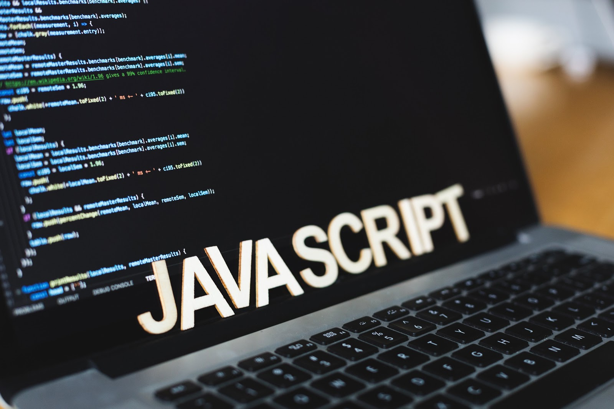

○ Pourquoi choisir la formation DUT ?
Que faire après un baccalauréat général ou technologique ? Pourquoi ne pas choisir la formation en IUT (Institut Universitaire de Technologie) ?
Après s’être inscrit sur ParcourSup, l’admission se fait sur dossier, lettre de motivation (voire lettre de recommandation), éventuellement sur tests ou entretien de motivation.
La force majeure de cette filière est l’encadrement pédagogique.
Les enseignements sont assurés par une équipe d’enseignants universitaires, d’enseignants-chercheurs universitaires et de professionnels. Cette diversité permet aux étudiants de croiser les points de vue et les expériences et de se nourrir d’une pluralité évidente.
Sur les deux années, durant les quatre semestres, en plus des partiels de mi-semestre (tous les 3 mois) et de fin de semestre, la notation prend également en compte le contrôle continu, c’est à dire les rendus lors des travaux dirigés, les devoirs surveillés organisés par les enseignants, etc… Contrairement aux universités, où seuls les partiels comptent.
De plus, la validation des semestres est conditionnée par une moyenne générale supérieure ou égale à 10/20 sans avoir d’unité d’enseignement (UE) inférieure à 8/20.
Deux semestres consécutifs peuvent se compenser si les notes d’un ne sont pas suffisantes.
Tout au long du parcours pour l’obtention du diplôme, l’apprentissage mêlant théorique (cours magistraux), pratique (TD, TP et projets) et expérience professionnelle (un stage de 10 semaines est obligatoire en fin de seconde année pour valider son diplôme) du DUT rend les étudiants polyvalents et efficaces rapidement.
○ L'IUT informatique en quelques mots
Les spécificités de l’IUT informatique sont nombreuses. Tout au long de la formation, les étudiants travaillent sur des environnements de travail distincts, tels que Linux ou bien Windows, pour apprendre sur différents supports.
Des méthodes de travail innovantes par rapport au lycée sont également enseignées, notamment les méthodes agiles. Ces méthodes de conduite de projets visent à impliquer le client dans l’avancée du développement et à lui montrer la production de l’équipe de manière régulière. Ces nouvelles approches s’opposent aux méthodes de travail en cascade, c’est à dire de planifier, dès le début, le déroulement complet du projet (de la conception au rendu final). Les projets effectués tout au long du cursus permettent de mettre en pratique les techniques apprises.
Les langages tels que le HTML, CSS, PHP, JavaScript, SQL, Python, Java, C, C++, ADA ou bien le XML (en programmation mobile) sont enseignés durant les quatre semestres.
En parallèle des enseignements, de nombreux évènements sont organisés au sein d’un institut. Par exemple, des forums IUT - entreprises ont lieu, durant lesquels les étudiants peuvent rencontrer directement des professionnels du milieu pour trouver un stage par exemple. Il existe également des forum permettant de se renseigner sur les poursuites d’étude, de simuler des entretiens d’embauche professionnels, etc…
L'INFORMATIQUE AU FÉMININ
○ Les chiffres actuels
Il y a actuellement en France 11% d'étudiantes dans les écoles d'ingénieur en informatique. Ce faible pourcentage de présence féminine montre que ce secteur a besoin d’une diversité plus importante, de manière à ce que les projets menés soient plus inclusifs et pertinents.
Les femmes représentent désormais, tous métiers confondus, un peu moins de 28 % dans le secteur du numérique pourtant en plein développement (contre 48 % dans le reste de l'économie).
○ La réalité de la formation
On peut expliquer cette faible présence des femmes dans la filière informatique par les clichés qui, encore aujourd’hui, ont la peau dure. Le milieu est réputé masculin, sexiste, laissant peu de temps à des activités personnelles…
Néanmoins, la réalité est toute autre. De plus en plus de jeunes filles se lancent dans des études en informatique. Chaque année, les effectifs féminins augmentent et l’intérêt porté à la section s'accroît. Cela est dû aux nombreuses initiatives prises pour faire connaître l’informatique et la filière en général aux lycéennes et collégiennes.
○ Les initiatives prises
En effet, des initiatives sont prises et les instituts organisent des conférences avec des figures féminines du milieu informatique : des témoignages de leurs expériences ou bien de leurs parcours remarquables. Par exemple, des employées chez DELL ont proposé de parrainer des étudiantes en seconde année de DUT.
SUIS-JE FAIT POUR L'IUT INFORMATIQUE ?
○ Curieux
L’informatique étant un domaine en perpétuelle évolution, il est important de s’intéresser aux nouvelles innovations du milieu.
○ Assidu
Être organisé et constant dans son travail est un avantage considérable, tant au niveau du travail personnel que dans l’organisation de son temps.
○ Logique
En programmation ou en maths, la logique est une qualité essentielle qui permet d’être efficace dans son travail, réfléchi et de prendre du recul plus facilement.
○ Patient
Débuguer, reprendre, lancer, reprendre encore. La patience est vitale pour ne pas s’arracher les cheveux.
○ Créatif et innovant
Garder un esprit inventif est un atout, pour l’organisation de son code, l’aspect visuel de vos futurs sites webs, par exemple.
○ À l’écoute et aimer le travail en équipe
Les nombreux projets réalisés au cours du cursus finiront de vous convaincre que les qualités sociales sont importantes dans cette formation.